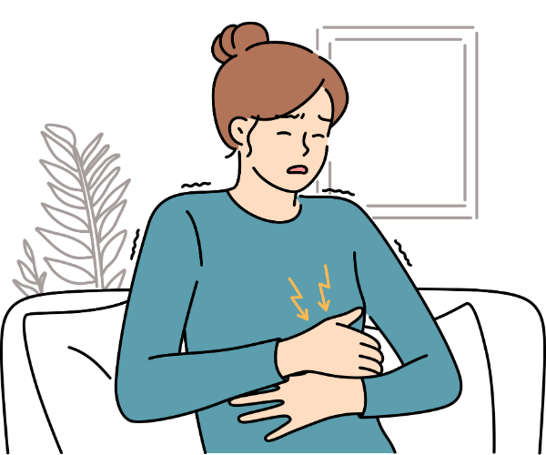
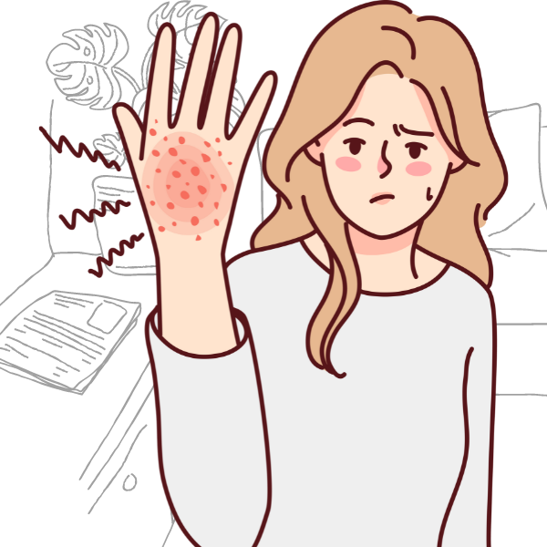

Definição
É uma desordem sistêmica autoimune, desencadeada pela ingestão de glúten. O glúten é uma proteína que está presente nos seguintes cereais: trigo, centeio, cevada (e na aveia por contato cruzado). A doença celíaca é caracterizada pela inflamação crônica da mucosa do intestino delgado que pode resultar na atrofia das vilosidades intestinais, com consequente má absorção intestinal e suas manifestações clínicas. A prevalência mundial de Doença Celíaca é estimada em 1% da população. No Brasil ainda não existem estudos multicêntricos para sabermos a prevalência da Doença Celíaca entre os brasileiros.
O único tratamento para a Doença Celíaca é uma alimentação sem glúten por toda a vida. A pessoa celíaca nunca poderá consumir alimentos que contenham trigo, aveia, centeio, cevada e malte ou os seus derivados (farinha de trigo, pão, farinha de rosca, macarrão, bolachas, biscoitos, bolos e outros). A doença celíaca pode levar à morte se não for tratada. Qualquer quantidade de glúten, por mínima que seja, é prejudicial para o celíaco.

Sintomas
Dor abdominal
Depressão e ansiedade
Manifestações dermatológicas
Anemia ferropriva
Além da má absorção de ferro, a doença celíaca também pode levar à atrofia das vilosidades intestinais, diminuindo ainda mais a área de absorção de nutrientes, incluindo o ferro. Além disso, a inflamação crônica presente na doença celíaca pode afetar a absorção de ferro pelo organismo.
Aftas de repetição
A má absorção de nutrientes associada à doença celíaca pode levar a deficiências de vitaminas e minerais, como vitamina B12, ácido fólico e ferro, que desempenham um papel importante na saúde bucal. Essas deficiências nutricionais podem aumentar a suscetibilidade às aftas de repetição.
Dores de cabeça
Deficiências nutricionais, como deficiência de vitaminas do complexo B, incluindo riboflavina (vitamina B2), têm sido associadas a um maior risco de enxaquecas. Como a doença celíaca pode levar a má absorção de nutrientes, incluindo vitaminas do complexo B, isso pode contribuir para o desenvolvimento de enxaquecas em pessoas com a doença.
Infertilidade
A inflamação crônica e a má absorção de nutrientes resultantes da doença celíaca podem interferir na função ovariana e na liberação adequada de hormônios, afetando negativamente a ovulação e a fertilidade.
Redução da densidade óssea
A inflamação crônica causada pela doença celíaca pode estimular a atividade de células ósseas que desencadeiam a reabsorção óssea, levando a uma perda de massa óssea ao longo do tempo.
Distensão abdominal
A inflamação crônica e os danos à mucosa intestinal podem afetar a digestão e a absorção adequada de alimentos, resultando em problemas gastrointestinais, como distensão abdominal. A distensão abdominal é caracterizada pelo aumento do volume abdominal, sensação de plenitude, desconforto e inchaço.
Contaminação Cruzada
A contaminação cruzada ocorre quando há transferência direta ou indireta de contaminantes físicos, químicos ou biológicos de um alimento, utensílio, vetor ou manipulador para alimentos que serão consumidos. Pode ocorrer nas diferentes etapas do processo de produção do alimento: pré-preparo, tratamento, armazenamento, transporte, serviço. São fontes de contaminação: esponjas, panos de prato, colher de pau, óleo para fritura, dentre outros.
Observação 1: Celíacos só podem ingerir alimentos
feitos em cozinhas descontaminadas.
Observação 2:
É obrigatório por lei federal (Lei nº 10.674, de 16/05/2.003) que
todos os alimentos industrializados informem em seus rótulos a
presença ou não de glúten para resguardar o direito à saúde dos
portadores de doença celíaca.